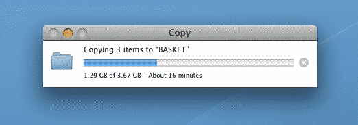
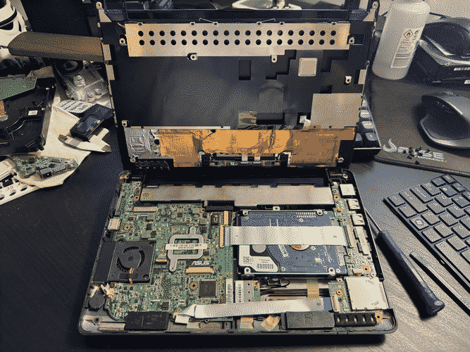
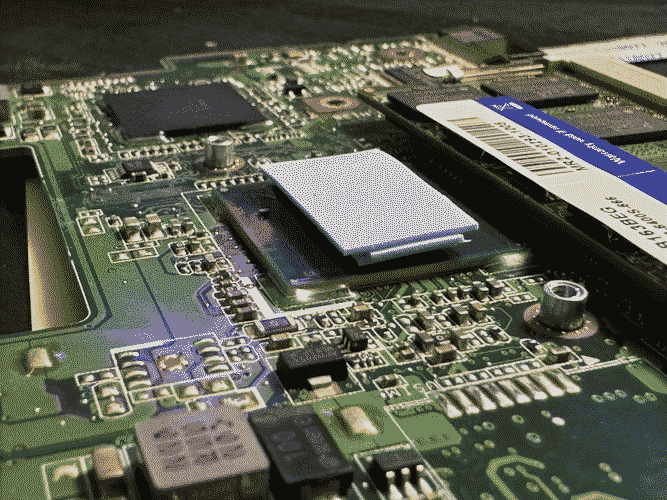

Old Computer Challenge 2024 - Day 4
Another day, another update. Today I worked a bit more on the code for my Gopher client, it's still in it's embryonic where the API for the main library is being built, although I'm getting closer to a point where I may start working on the actual interface of the application itself. Hopefully I'll be able to do so tomorrow.
While transferring a couple of files to a USB flash drive using the Power Mac G5, I was reminded of how slow USB 2.0 speeds actually are. I've been living with USB 3.0+ for so long that I did forget actually how painfully slow things were back in the day (when I thought this was fast). I'm never complaining about USB 3.0 speeds ever again.


While following the adventures of
sizeof(cat) and
jasonsanta I got in the mood of playing with a netbook as well. I dug my
Eee PC 1005PE from storage and began the process of preparing it for the
challenge, which would've involved swapping in an SSD to get some extra
performance, although upon talking about it on IRC unsigned
(sizeof(cat)) reminded me that after all this time it would've been advisable to
change the thermal compound of the CPU, which was a very good idea after
all!


As I began tearing it down, a process that's a lot more enjoyable than in the PowerBook G4, I was glad I opened it up. The thermal pad for the CPU had hardened and was extremely dry, to the point where it began crumbling. The problem was that I wasn't expecting such a thick thermal pad, even when you looked at the profile of the board you should see that there was a substantial gap between the CPU and the heatsink, so a proper thermal pad was the only way to actually get them to bond together. Thankfully I had a box of them, but of a much thinner variety (for regular electronics work), so I've done what many in the past have been crucified for... stacked them to bridge the gap. It's not pretty, but it sure is functional, while installing drivers and applications, constantly leaving the CPU at 100%, the highest temperature recorded by HWMonitor was 75°C, which is perfectly fine by me.


All in all I had a great time working on this old netbook and installing all of its drivers and must-have applications. It sure is always quite a nostalgia trip to install Visual Studio 2010. Let's hope tomorrow I'll do some coding in it.